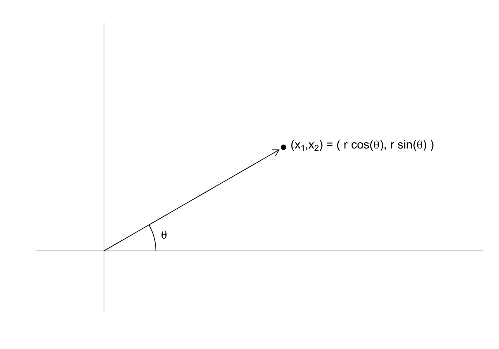
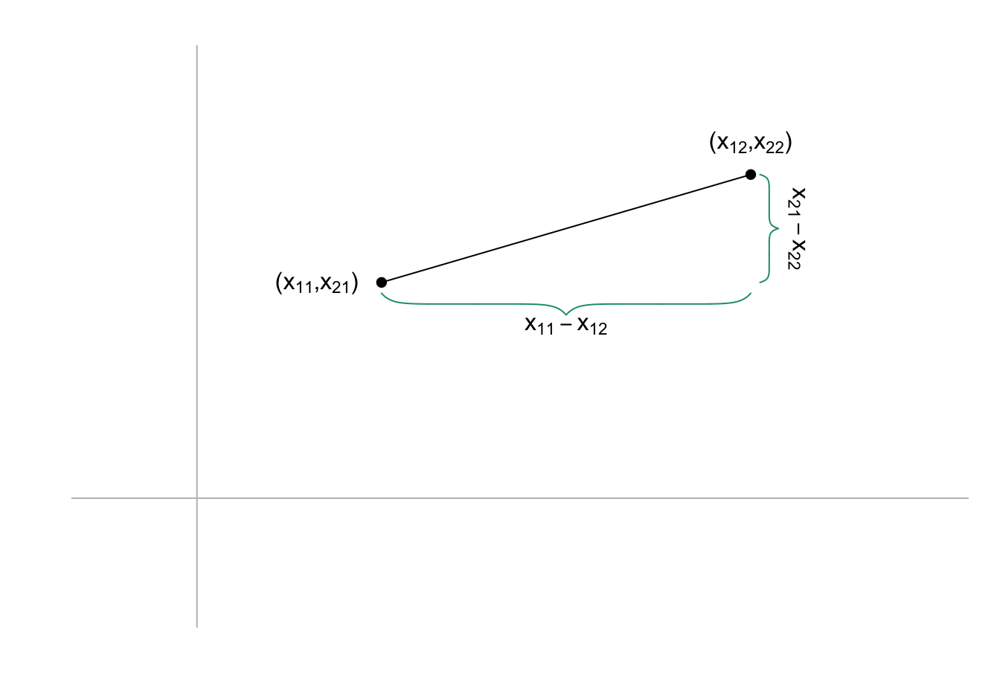
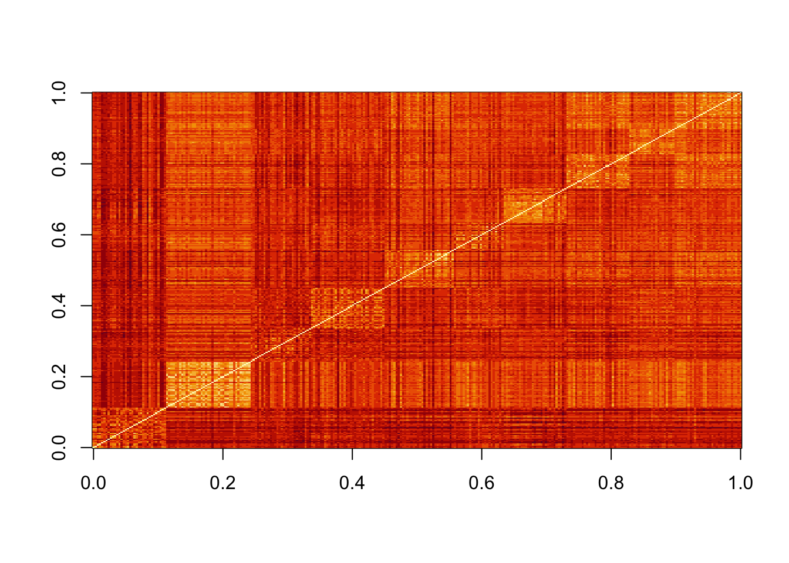
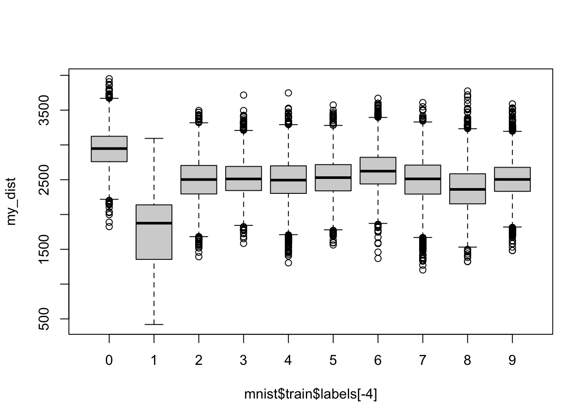

dim(x)[1] 300 784dim(t(x))[1] 784 300If
\[ \mathbf{X} = \begin{pmatrix} x_{1,1}&x_{1,2}&\dots & x_{1,p} \\ x_{2,1}&x_{2,2}&\dots & x_{2,p} \\ \vdots & \vdots & \ddots & \vdots & \\ x_{n,1}&x_{n,2}&\dots & x_{n,p} \end{pmatrix} \]
The transponse
\[ \mathbf{X}^\top = \begin{pmatrix} x_{1,1}&x_{2,1}&\dots & x_{n,1} \\ x_{1,2}&x_{2,2}&\dots & x_{n,2} \\ \vdots & \vdots & \ddots & \vdots & \\ x_{1,p}&x_{2,p}&\dots & x_{n,p} \end{pmatrix} \]
If we are writing out a column, such as \(\mathbf{x}_1\) defined above, in a sentence we often use the notation: \(\mathbf{x}_1 = ( x_{1,1}, \dots x_{n,1})^\top\) to avoid wasting vertical space in the text.
In R we compute the transpose using the function t
dim(x)[1] 300 784dim(t(x))[1] 784 300Linear algebra was born from mathematicians developing systematic ways to solve systems of linear equations, for example
\[ \begin{align} x + 3 y - 2 z &= 5\\ 3x + 5y + 6z &= 7\\ 2x + 4y + 3z &= 8. \end{align} \]
To explain matrix multiplication, define two matrices \(\mathbf{A}\) and \(\mathbf{B}\)
\[ \mathbf{A} = \begin{pmatrix} a_{11}&a_{12}&\dots&a_{1n}\\ a_{21}&a_{22}&\dots&a_{2n}\\ \vdots&\vdots&\ddots&\vdots\\ a_{m1}&a_{2}&\dots&a_{mn} \end{pmatrix}, \, \mathbf{B} = \begin{pmatrix} b_{11}&b_{12}&\dots&b_{1p}\\ b_{21}&b_{22}&\dots&b_{2p}\\ \vdots&\vdots&\ddots&\vdots\\ b_{n1}&b_{n2}&\dots&b_{np} \end{pmatrix} \]
and define the product of matrices \(\mathbf{A}\) and \(\mathbf{B}\) as the matrix \(\mathbf{C} = \mathbf{A}\mathbf{B}\) that has entries \(c_{ij}\) equal to the sum of the component-wise product of the \(i\)th row of \(\mathbf{A}\) with the \(j\)th column of \(\mathbf{B}\). Using R code we can define \(\mathbf{C}= \mathbf{A}\mathbf{B}\) as follows:
m <- nrow(A)
p <- ncol(B)
C <- matrix(0, m, p)
for(i in 1:m){
for(j in 1:p){
C[i,j] <- sum(A[i,] * B[,j])
}
}Because this operation is so common, R includes a mathematical operator %*% for matrix multiplication:
C <- A %*% BUsing mathematical notation \(\mathbf{C} = \mathbf{A}\mathbf{B}\) looks like this:
\[ \begin{pmatrix} a_{11}b_{11} + \dots + a_{1n}b_{n1}& a_{11}b_{12} + \dots + a_{1n}b_{n2}& \dots& a_{11}b_{1p} + \dots + a_{1n}b_{np}\\ a_{21}b_{11} + \dots + a_{2n}b_{n1}& a_{21}b_{n2} + \dots + a_{2n}b_{n2}& \dots& a_{21}b_{1p} + \dots + a_{2n}b_{np}\\ \vdots&\vdots&\ddots&\vdots\\ a_{m1}b_{11} + \dots +a_{mn}b_{n1}& a_{m1}b_{n2} + \dots + a_{mn}b_{n2}& \dots& a_{m1}b_{1p} + \dots + a_{mn}b_{np}\\ \end{pmatrix} \]
Note this definition implies that the multiplication \(\mathbf{A}\mathbf{B}\) is only possible when the number of rows of \(\mathbf{A}\) matches the number of columns of \(\mathbf{B}\).
So how does this definition of matrix multiplication help solve systems of equations? First, any system of equations with unknowns \(x_1, \dots x_n\)
\[ \begin{align} a_{11} x_1 + a_{12} x_2 \dots + a_{1n}x_n &= b_1\\ a_{21} x_1 + a_{22} x_2 \dots + a_{2n}x_n &= b_2\\ \vdots\\ a_{n1} x_1 + a_{n2} x_2 \dots + a_{nn}x_n &= b_n\\ \end{align} \]
can now be represented as matrix multiplication by defining the following matrices:
\[ \mathbf{A} =\begin{pmatrix} a_{11}&a_{12}&\dots&a_{1n}\\ a_{21}&a_{22}&\dots&a_{2n}\\ \vdots&\vdots&\ddots&\vdots\\ a_{m1}&a_{22}&\dots&a_{nn} \end{pmatrix} ,\, \mathbf{b} = \begin{pmatrix} b_1\\ b_2\\ \vdots\\ b_n \end{pmatrix} ,\, \mbox{ and } \mathbf{x} = \begin{pmatrix} x_1\\ x_2\\ \vdots\\ x_n \end{pmatrix} \]
and rewriting the equation simply as
\[ \mathbf{A}\mathbf{x} = \mathbf{b} \]
The linear algebra algorithms listed above, such as Gaussian elimination, provide a way to compute the inverse matrix \(A^{-1}\) that solves the equation for \(\mathbf{x}\):
\[ \mathbf{A}^{-1}\mathbf{A}\mathbf{x} = \mathbf{x} = \mathbf{A}^{-1} \mathbf{b} \]
To solve the first equation we wrote out in R, we can use the function solve:
A <- matrix(c(1, 3, -2, 3, 5, 6, 2, 4, 3), 3, 3, byrow = TRUE)
b <- matrix(c(5, 7, 8))
solve(A, b)The identity matrix, represented with a bold I, is like the number 1, but for matrices: if you multiply a matrix by the identity matrix, you get back the matrix.
\[ \mathbf{I}\mathbf{x} = \mathbf{x} \]
If you do some math with the definition of matrix multiplication you will realize that \(\mathbf{I}\) is a matrix with the same number of rows and columns (refereed to as square matrix) with 0s everywhere except the diagonal:
\[ \mathbf{1}=\begin{pmatrix} 1&0&\dots&0\\ 0&1&\dots&0\\ \vdots&\vdots&\ddots&\vdots\\ 0&0&\dots&1 \end{pmatrix} \]
It also implies that due to the definition of an inverse matrix we have
\[ \mathbf{A}^{-1}\mathbf{A} = \mathbf{1} \]
Because the default for the second argument in solve is an identity matrix, if we simply type solve(A), we obtain the inverse \(\mathbf{A}^{-1}\). This means we can also obtain a solution to our system of equations with:
solve(A) %*% bTo define distance, we introduce another linear algebra concept: the norm. Recall that a point in two dimensions can represented in polar coordinates as:

with \(\theta = \arctan{\frac{x2}{x1}}\) and \(r = \sqrt{x_1^2 + x_2^2}\).
If we think of the point as two dimensional vector \(\mathbf{x} = (x_1, x_2)^\top\), \(r\) defines the norm of \(\mathbf{x}\).
The norm can be thought of as the size of the two-dimensional vector disregarding the direction: if we change the angle, the vector changes but the size does not.
The point of defining the norm is that we can extrapolated the concept of size to higher dimensions.
Specifically, we write the norm for any vector \(\mathbf{x}\) as:
\[ ||\mathbf{x}|| = \sqrt{x_1^2 + x_2^2 + \dots + x_n^2} \]
\[ ||\mathbf{x}||^2 = \mathbf{x}^\top\mathbf{x} \]

\[ \sqrt{(x_{11} - x_{12})^2 + (x_{21} - x_{22})^2} \]
The reason we introduced the norm is because this distance is the size of the vector between the two points and this can be extrapolated to any dimension.
The distance between two points, regardless of the dimensions, is defined as the norm of the difference:
\[ || \mathbf{x}_1 - \mathbf{x}_2||. \]
\[ || \mathbf{x}_1 - \mathbf{x}_2 || = \sqrt{ \sum_{j=1}^{784} (x_{1,j}-x_{2,j })^2 } \]
x_1 <- x[6,]
x_2 <- x[17,]
x_3 <- x[16,]c(sum((x_1 - x_2)^2), sum((x_1 - x_3)^2), sum((x_2 - x_3)^2)) |> sqrt()[1] 2319.867 2331.210 2518.969crossprod(x) is convenient for computing norms it multiplies t(x) by xc(crossprod(x_1 - x_2), crossprod(x_1 - x_3), crossprod(x_2 - x_3)) |> sqrt()[1] 2319.867 2331.210 2518.969Note crossprod takes a matrix as the first argument and therefore the vectors used here are being coerced into single column matrices.
Also note that crossprod(x,y) multiples t(x) by y.
We can see that the distance is smaller between the first two.
This is in agreement with the fact that the first two are 2s and the third is a 7.
y[c(6, 17, 16)][1] 2 2 7dist, which computes the distance between each row and produces an object of class dist:d <- dist(x)
class(d)[1] "dist"To access the entries using row and column indices, we need to coerce it into a matrix.
We can see the distance we calculated above like this:
as.matrix(d)[c(6, 17, 16), c(6, 17, 16)] 6 17 16
6 0.000 2319.867 2331.210
17 2319.867 0.000 2518.969
16 2331.210 2518.969 0.000image(as.matrix(d))If we order this distance by the labels, we can see yellowish squares near the diagonal.
This is because observations from the same digits tend to be closer than to different digits:
image(as.matrix(d)[order(y), order(y)])
Predictor space is a concept that is often used to describe machine learning algorithms.
The term space refers to an advanced mathematical definition for which we provide a simplified explanation to help understand the term predictor space when used in the context of machine learning algorithms.
We can think of all predictors \((x_{i,1}, \dots, x_{i,p})^\top\) for all observations \(i=1,\dots,n\) as \(n\) \(p\)-dimensional points.
A space can be thought of as the collection of all possible points that should be considered for the data analysis in question.
This includes points we could see, but have not been observed yet.
In the case of the handwritten digits, we can think of the predictor space as any point \((x_{1}, \dots, x_{p})^\top\) as long as each entry \(x_i, i = 1, \dots, p\) is between 0 and 255.
Some Machine Learning algorithms also define subspaces.
A common approach is to define neighborhoods of points that are close to a center.
We can do this by selecting a center \(\mathbf{x}_0\), a minimum distance \(r\), and defining the subspace as the collection of points \(\mathbf{x}\) that satisfy
\[ || \mathbf{x} - \mathbf{x}_0 || \leq r. \]
We can think of this a multidimensional sphere since, as in a circle or sphere, every point is the same distance away from the center.
Other machine learning algorithms partition the predictor space into non-overlapping regions and then make different predictions for each region using the data in the region.
A and B, containing randomly generated and normally distributed numbers. The dimensions of these two matrices should \(4 \times 3\) and \(3 \times 6\), respectively. Confirm that C <- A %*% B produce the same results as:m <- nrow(A)
p <- ncol(B)
C <- matrix(0, m, p)
for(i in 1:m){
for(j in 1:p){
C[i,j] <- sum(A[i,] * B[,j])
}
}\[ \begin{align} x + y + z + w &= 10\\ 2x + 3y - z - w &= 5\\ 3x - y + 4z - 2w &= 15\\ 2x + 2y - 2z - 2w &= 20\\ \end{align} \]
xmnist <- read_mnist()
x <- mnist$train$images[1:300,]
y <- mnist$train$labels[1:300]and compute the distance matrix
d <- dist(x)
class(d)Generate a boxplot showing the distances for the second row of d stratified by digits. Do not include the distance to itself which we know it is 0. Can you predict what digit is represented by the second row of x?
apply function and matrix algebra to compute the distance between the fourth digit mnist$train$images[4,] and all other digits represented in mnist$train$images. Then generate as boxplot as in exercise 2 and predict what digit is the fourth row.my_dist <- apply(mnist$train$image[-4,], 1, function(x){
sqrt(sum((mnist$train$image[4,] - x)^2))
})
boxplot(my_dist~mnist$train$labels[-4])